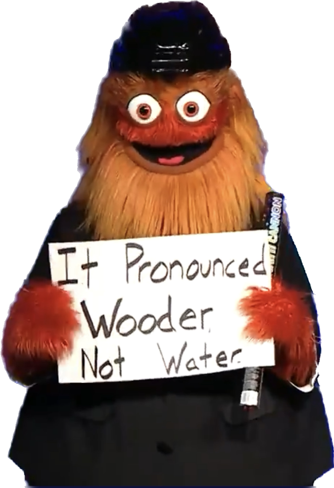

This is a blog post to accompany my American Dialect Society poster.
{kind=link}
“Wooder”
If there’s one thing people know about the Philadelphia dialect, it’s that we say [wʊɾɚ], often spelled “wooder” for the word water. It was how the LA Times opened their story about Mare of Easttown.
Barely 11 minutes into the first episode of “Mare of Easttown,” Kate Winslet goes where few actors have gone before.
She says the word “wooder.”
As in, what the good people of southeastern Pennsylvania call the stuff that comes out of the faucet.
When accepting a Webby award in 2019, the NHL mascot Gritty held up a sign saying
It Pronounced Wooder, not Water.

The fact that Philadelphians say “wooder” is also the number one thing anyone ever wants to talk to me about when they find out I study the Philadelphia dialect. Back in 2013, when the big paper about what we found in the Philadelphia Neighborhood Corpus came out (Labov, Rosenfelder, and Fruehwald 2013), we got interviewed by the local news, and they asked me “What about ‘wooder’”? I said “Philadelphians say wooder, and that’s that.”
When I said it, I meant it almost apologetically. We hadn’t investigated anything about the word, mostly because we were focusing on larger structural shifts in the vowel system. As far as I knew, the “wooder” pronunciation was just a one off alteration to a single word, and I didn’t think there was anything too interesting to say about it. “That’s that.” The way it got edited into the final broadcast, it seemed like I was making more of a statement of finality, as if to say “Lots of other things are changing about the Philadelphia dialect, but not ‘wooder.’ And that’s that.”
This project is me circling back around to both of those possible messages behind “and that’s that” and asking “is it really?”
When did people notice “wooder”?
I start off the poster looking at what people have had to say about “wooder”. In part, this is inspired by a disagreement I’ve had with how the vowel ought to be described. With my own introspection, I think the eye-dialect version <wooder> is just right. I think the vowel in the first syllable is /ʊ/, or Foot class. However, Labov has suggested here and there that it’s more of an extremely raised and stereotyped realization of /ɔ/ or Thought class.
I was explaining this to a friend, and she said “Well, you would think it was /ʊ/ growing up with the ‘wooder’ spelling in media and print.” To which I replied, “I don’t think <wooder> was a thing people wrote out when I was growing up.” So, that launched my first systematic exploration of ‘wooder.’
Wooder in print
My best approach, so far, to see how long the pronunciation [wʊɾɚ] has been represented as <wooder> is to do a NewsBank search for it in Philadelphia area newspapers. Those results are represented in the next figure.
plotting code
all_year <- tibble(
year = seq(
min(wooder$year),
max(wooder$year),
by = 1
)
)
wooder |>
full_join(all_year) |>
replace_na(list(hits = 0)) |>
ggplot(aes(year, hits))+
stat_smooth(method = "gam",
method.args = list(family = "poisson")) +
geom_point()+
labs(
title = str_wrap(
"'wooder' in print",
width = 30
),
subtitle = str_wrap(
"The number of hits for the word 'wooder'
in Philadelphia area newspapers by year",
width = 40
),
caption = "Source: Newsbank"
)+
theme(aspect.ratio = 5/8,
text = element_text(size = 16),
plot.subtitle = element_text(size = 10, color = "grey80"),
plot.caption = element_text(size = 10, color = "grey80")){kind=link}
It won’t be surprising to Philly area people, but every hit prior to 1994 is from a single columnist, Clark DeLeon1. DeLeon wrote a popular column, and often had a keen ear for Philly area dialect features. But other than one columnist’s keen ear, there’s essentially nothing until about the year 2000 when a gradual increase begins. There’s a bit of a phase change in 2015, and when I looked at most of those stories, they were about Philadelphia Brewing Company’s “Holy Wooder,” a Belgian Tripel they released in honor of the papal visit to the city.
It’s worth saying I didn’t personally realize there was anything distinctive about the way I said water until I was 18 and in college, and someone did a double take when I said [wʊɾɚ]. That was in 2003, just before the <wooder> boom. Needless to say, I don’t think an 18 year old Philadelphian could repeat that experience today!
Talking about wooder
By this point, I’ve gone through and listened to every token of water in the Philadelphia Neighborhood Corpus, and there are a number of points of “metalinguistic commentary”, or people talking about the word’s pronunciation. The earliest example is from 1974, when a young man said
That’s what a lot of people say, [wɑtʰɚ], cause [wʊɾɚ] sounds like W-O-O-D-D-E-R or something.
This is a really interesting comment, cause he’s specifically singling out the [ɑ] vowel pronunciation as something a lot of (presumably other) people say. In fact, two of the other instances of commentary about water only ever use the [ɑ] vowel version as something marked about New York City speech. He also combines [ɑ] with an aspirated [tʰ], which would seem to align use of [ɑ] with hyper- or hypercorrect- speech. While flapping the /t/ in water is nearly a North American standard, it seems to get almost just as much notice and attention as the vowel quality.
And speaking of vowel quality! This comment also identifies the vowel category with /ʊ/, because he specifically spells it out “W-O-O-D”. So, there’s one point in my column!
When did people start saying “wooder”?
Now, it’s possible for a linguistic feature to be part a community’s repertoire for a long time without it becoming noticed or commentable. Take the distinctively named Philly area dessert, “water ice,” as an example. This phrase contains two distinctively Philly area pronunciation features:
- The pronunciation of “water” as [wʊɾɚ].
- The pre-voiceless centralization of the onset of /ay/ to [ʌi] in “ice”.
I’ve actually done a lot of research on this second feature, which is now a well established feature of the dialect. But I’m actually not aware of any public commentary about it, and when the whole phrase is rendered in eye dialect or printed on a tee-shirt, it comes out as just <wooder ice>, not <wooder uhys>
That is to say, just because the earliest time I can find anyone discussing “wooder” is 1974 doesn’t mean that’s when people started pronouncing it that way. In fact, it definitely means people starting pronouncing it that way well before! Figuring out the history here became the second part of the project, which I’ll write about in a second post.
References
Footnotes
If you have access to NewsBank or the Inquirer Archives, the first <wooder> hit is from April 26, 1983 in DeLeon’s column The Scene with the lede “LANGUAGE: YO, BILL, WATCHES TAWKIN’ ABOUT?”. The “Bill” in question was William Safire.↩︎
Reuse
Citation
@online{fruehwald2022,
author = {Fruehwald, Josef},
title = {Rising {Wooders}},
series = {Væl Space},
date = {2022-12-31},
url = {https://jofrhwld.github.io/blog/posts/2022/12/2022-12-31_wooder1/},
langid = {en}
}